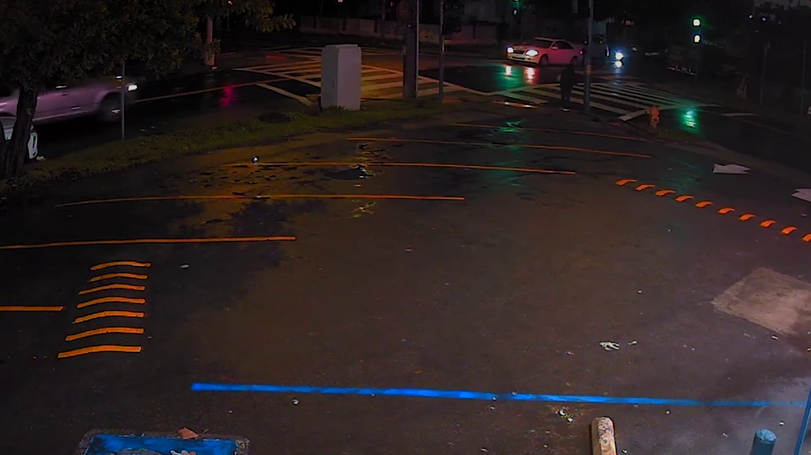
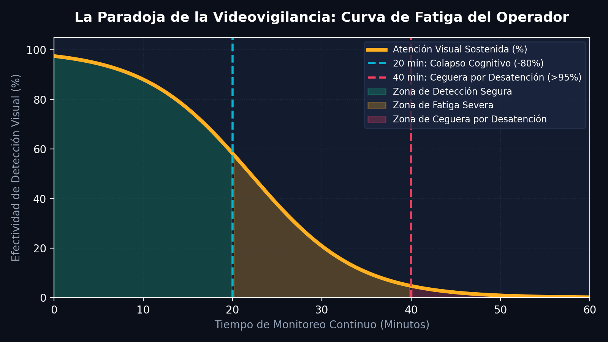
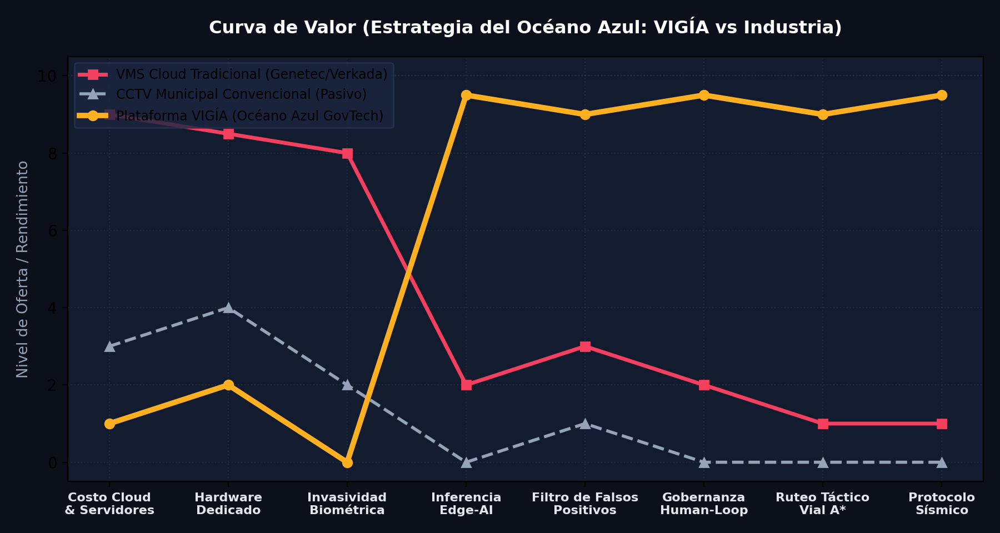
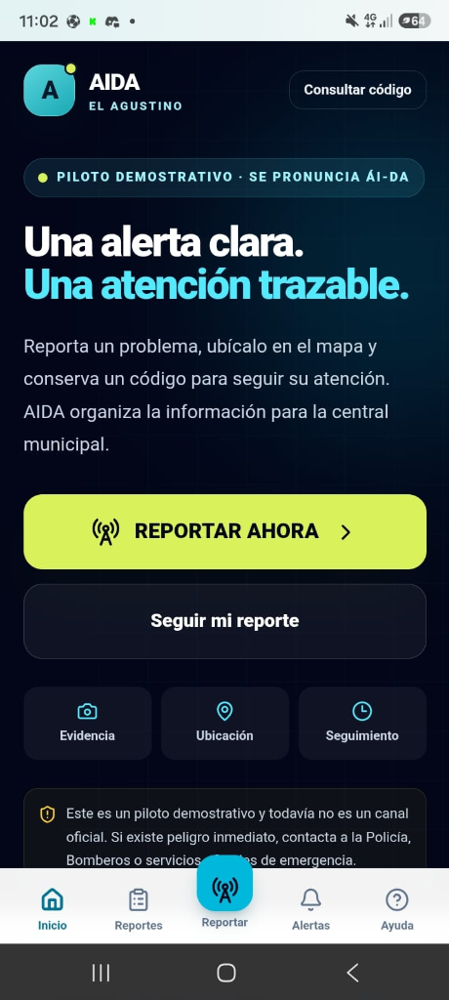
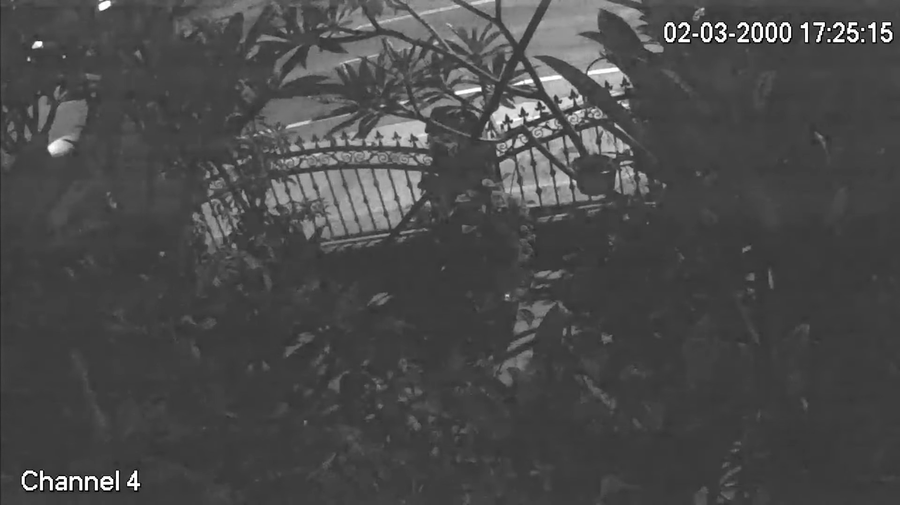
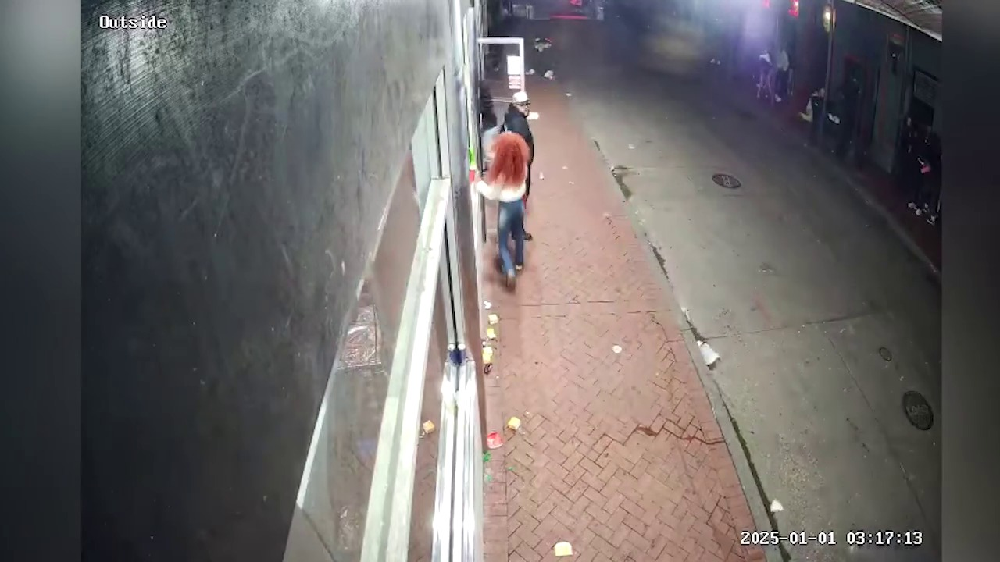

Curso Ingeniería de Producto — prototipo operable, no maqueta. 6 operadores × 38 pantallas. Tras 20 min la atención cae a la mitad. Solo el 13% se vigila real. VIGÍA une visión local + criterio humano: la IA propone, el operador dispone. Pruébalo en el simulador interactivo de abajo; la consola real se prueba en local (#usar-en-vivo).
Sala en penumbra, pared de 233 vivos: Puente Nuevo, Riva Agüero, Cerro San Pedro. 6 ops por turno. Factor atención 0.55 tras monotonía. Resultado: 87% en silencio, cámaras solo como grabadora forense.


Izq: operador agotado. Der: RF-DETR Medium 78ms segmentando en local, sin nube.
Arrastra · clic en la imagen para verla full-res ·
La IA nunca decide sola. Valida o descarta y el sistema aprende.
2 personas contacto + agitación 1.8s.
5 sectores, conos, patrulleros, serenos. Grafo vial A* propio. Offline vía vendor/teselas.

PWA instalable: código + PIN, GPS vivo, despacho A* 14min→3m40s, offline Cerro San Pedro con cola. Canal vecinal anónimo REP-XXXX.
index.html + js/ vanilla. Video nunca sale. RF-DETR Medium 116MB WebGPU 88ms / WASM 247ms, ByteTrack 0.225, 9 reglas con evidencia objeto, 57 rasgos.
FastAPI + SQLite WAL. Capas rutas/servicios/repos. Auth PBKDF2, 4 roles, auditoría SHA-256, WS por permiso. Sin servicio → MODO LOCAL declarado.
campo/ PWA sereno/ciudadano offline. taller.html entrena clasificador. banco/ 10 detectores 56 frames 1075 objs. banco-incidentes/ secuencias.
| Evento | Evidencia exigida | Prioridad |
|---|---|---|
| GRESCA | ≥2 personas contacto + agitación 1.5s | ALTA |
| AGLOMERACIÓN | ≥12 pistas 1.8s | MEDIA |
| SUELO | vertical→horizontal inmóvil | CRÍTICA |
| BASURA/DESMONTE | bulto >2.6s + persona + horario | MEDIA/ALTA |
| HUMO/INCENDIO | fotométrico − exclusión persona 35% | CRÍTICA |
Máquina NUEVO→VALIDADO→DESPACHADO→ATENCIÓN→CERRADO espejo consola/servidor. Lenguaje no acusatorio “posible…”.
| Usuario | Pass demo | Puede |
|---|---|---|
| operador | vigia-demo-opera | validar/descartar/despachar |
| supervisor | vigia-demo-super | + cerrar/derivar/auditar |
| admin | vigia-demo-admin | + padrón |
| soporte | vigia-demo-sopor | cámaras, no incidentes |
CAM-001 webcam real. CAM-002–012 sim. 4 NYSDOT HLS públicas 352x240 (no municipales). Móvil IP Webcam 1080p vía /camara solo red local. RTSP muni = fase futura con convenio.


Hardware existente, open-source Apache/MIT, cero $/cámara, video sin internet.
Cero facial, patrones geométricos, validación humana obligatoria.
Ley 32069 Art.34 piloto 10 cámaras críticas.
Límites honestos: 1 cámara/navegador, SQLite 1 instancia, datos sim salvo video, requiere Chrome HW (no Basic Render) + localhost:8080 + descargar_mapa.py offline. Curso Ingeniería de Producto · FII-UNMSM · Equipo: Espejo Ferreyra · Jaime Allasi · Palomino Corrales.
La consola necesita cámara, micrófono y el servicio local (localhost:8080 + :8008), así que en este hosting estático no se puede embeber. Para probarla en tu PC descarga el proyecto y haz doble clic en DEMO_LANDING.bat.
Operación, mapa, incidentes, cámaras, unidades, campo, reportes.
Demo local: DEMO_LANDING.bat → http://localhost:8080/landing.html
Sereno SER-014 / PIN 1404. Ciudadano anónimo.
Demo local: campo/index.html con el servidor corriendo.
Herramienta dev: grabar 3s, entrenar, guardar clasificador.
Demo local: taller.html con el servidor corriendo.
| Rol | User | Pass |
|---|---|---|
| Operador | operador | vigia-demo-opera |
| Supervisor | supervisor | vigia-demo-super |
| Admin | admin | vigia-demo-admin |
| Soporte | soporte | vigia-demo-sopor |
Requiere DEMO_LANDING.bat (localhost:8080 + :8008). Sin :8008 entra en MODO LOCAL.